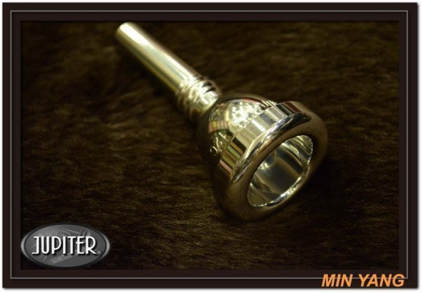

長號
長號是一種低音銅管樂器，以其獨特的滑動管設計而聞名。
演奏者通過拉動滑管來改變音高，這使得長號能夠在滑動中連續變換音調，形成獨特的滑音效果。
長號的音色豐富且深沉，適合用於管弦樂團、爵士樂隊和軍樂隊中。
它在古典音樂中經常擔任重要的低音部分，同時在現代音樂中也有廣泛的應用。
長號的多功能性和獨特的聲音使其成為各類音樂演出中的重要樂器。
圖片集

長號是一種低音銅管樂器，以其獨特的滑動管設計而聞名。
演奏者通過拉動滑管來改變音高，這使得長號能夠在滑動中連續變換音調，形成獨特的滑音效果。
長號的音色豐富且深沉，適合用於管弦樂團、爵士樂隊和軍樂隊中。
它在古典音樂中經常擔任重要的低音部分，同時在現代音樂中也有廣泛的應用。
長號的多功能性和獨特的聲音使其成為各類音樂演出中的重要樂器。